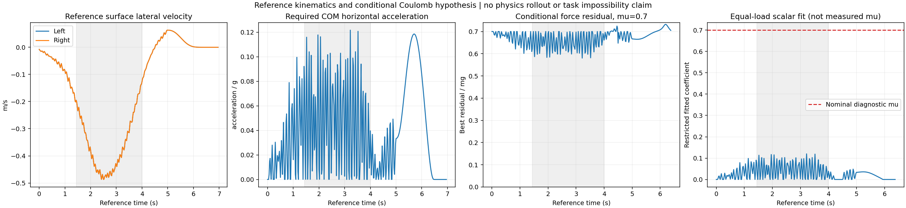

This is a kinematic and centroidal calculation, with zero integration steps. It does not reconstruct native PhysX forces, identify a tire coefficient, establish task impossibility or qualify a controller. Nominal validation remains at mu 0.7 with all original acceptance gates.

| Core statistic, 1.44–4.00 s | Median | 95th percentile | Maximum |
|---|---|---|---|
| Absolute reference material-point lateral speed, each wheel (m/s) | 0.3760 | 0.4773 | 0.4870 |
| Required whole-robot horizontal COM acceleration / g | 0.0466 | 0.1036 | 0.1217 |
| Best conditional force residual / mg, mu 0.7 | 0.6539 | 0.7000 | 0.7000 |
| Equal-load scalar coefficient fit, not measured friction | 0.0461 | 0.1027 | 0.1201 |
All six named reference leg joints have exactly zero reference velocity. The original cylindrical surface points lie on the flat floor, and the wheel axles are horizontal. The two wheels' lateral surface velocities are identical here, so reallocating load between them cannot cancel their lateral sliding friction under the stated idealized law. This differs from active leg coordination, which can change individual wheel slip.
The exact original model and reference are hashed. At each of the 349 original 50 Hz frames, forward kinematics and Cartesian Jacobians reconstruct body COM velocities, whole-robot COM and the instantaneous lowest wheel material-point velocity including wheel spin. No simulation step is integrated. Total model mass is 22.273000 kg, including the fixed IMU link.
Reference body positions are link origins, while exported linear velocities are COM velocities. The calculation handles those different origins explicitly. Recomputed link positions match within 2.39e-7 m and COM velocities within 6.00e-8 m/s; body orientation equivalence and named-body mapping are also checked. Contact-point velocity comes from its own Jacobian. The official MuJoCo Jacobian API documents this kinematic primitive.
COM acceleration is the central finite difference of the mass-weighted analytic COM velocity, using the original 0.02 s sample spacing; endpoints use second-order one-sided differences. The fine structure visible in the derivative plots belongs to this sampled reference and is not measured contact-force chatter.
F_required_xy = m * a_COM_xy N_required = m * (g + a_COM_z) F_t_i = -mu * F_n_i * v_surface_xy_i / ||v_surface_xy_i|| F_n_L >= 0, F_n_R >= 0, F_n_L + F_n_R = N_required
This hypothesis assumes a flat floor, two slipping original rigid wheels, fully saturated isotropic kinetic Coulomb friction, gravity and wheel forces as the only external forces. It optimizes the nonnegative left/right load split analytically by projecting the required XY force onto the segment between the two all-load-on-one-wheel forces. Single-wheel support is allowed. In the core, required total normal force stays within 0.999976–1.000019 mg.
The residual is a discrepancy of this exact kinematic reference and this assumed force law. It is not the error of a PhysX force reconstruction. Native solvers, finite timesteps, friction patches and their effective slip laws are not evaluated here. The displayed scalar coefficient is a separate equal-load least-squares fit to required horizontal force; it is not a sensor estimate or a recommendation to lower nominal friction.
A policy should be allowed to adapt its leg motion and contact velocity rather than being forced to reproduce the original static-leg kinematics. It can change wheel slip, leg coordination, lean and free height while pursuing the task-level path, speed and intended nonzero beta. Whether those adaptations are possible within motor, heading and tracking limits remains a native closed-loop training/validation question. This force-only calculation omits angular momentum, joint/motor constraints and contact transients.
The previous M/R warm-refinement result lowered the numerical angular-HF score with a physical leg-velocity cost but lost XY/beta tracking and collapsed. That observation is consistent with suppressing useful motion, but this audit does not prove that causal explanation.
The next controlled experiment is fresh task-space K/M learning, each initialized from the identical seed-42 random network, with empty optimizer state and zero normalizer counts. Each receives 512×24×1000 = 12,288,000 transitions under original adaptive PPO learning-rate 0.001/clip 0.2. Only the continuous worst-substep contact-load margin coefficient differs, 1 versus 4. Both release the previously artificial intermediate-leg tracking targets. The reward weights, beta +2, action-rate −0.5, free absolute height, original DR, rigid wheel model and actuator contract remain shared. This removes the inherited static-leg policy/critic/normalizer and small-update limitation of previous 2.46M warm refinements. It is a planned comparison, not a successful result.
Qualification still requires the original nine nominal checks in both PhysX and native CPU MuJoCo, plus full-body and within-turn speed review: core/whole XY RMSE at most 0.15 m and peak at most 0.30 m, core mean-speed ratio 0.95–1.10, intended-beta RMSE at most 10 degrees, core 10–100 Hz angular-XY RMS at most 0.7 of original same-engine PPO, and actual upward floor-normal load strictly above 5 N on at least one wheel at every 2.5 ms physical sample from 0.02–6.96 s, with no support gap. The other wheel may lift; no absolute-height or flight gate is added. No new friction sweep follows until nominal qualification.
python -B scripts/diagnose_reference_contact_dynamics.py \ --reference results/contact_taskspace_leg_velocity_20261025_v1/reference.npz \ --model outputs/car_failure_sideslip_20261015/raw/mujoco_model.xml \ --mu 0.7 --output-dir /tmp/tron1-reference-contact-audit-fresh
The model must already be available at the retained asset path; model assets and neural weights are not republished. Nine CPU tests cover force projection, unequal/single-wheel load, opposite-slip cancellation, rotation and wheel-order invariance, endpoint clipping and invalid data rejection. The analysis plot was inspected.
Exact values, inputs and limitations · Per-frame kinematic diagnostics · Diagnostic code · Math tests · Fresh-training protocol · Separate wheel-model comparisons.